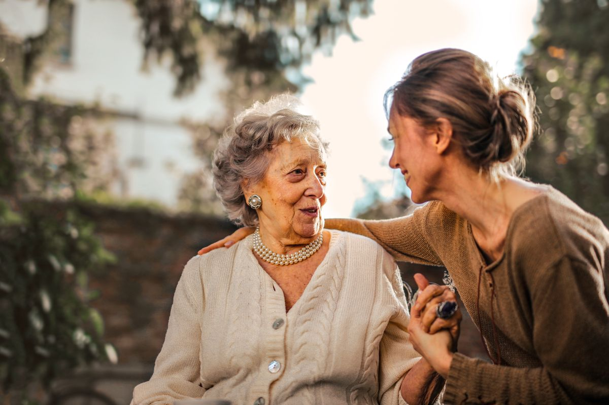
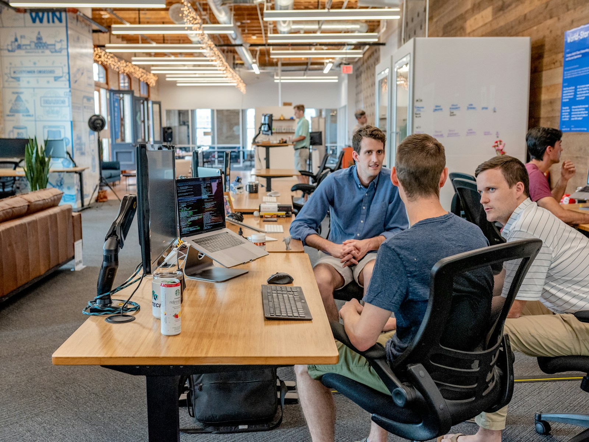

01

Residential support
Thoughtful, dependable support for routines, home life, and the choices that make a space feel like your own.
Learn about supportResidential support with purpose
Goal Winners Support helps individuals with developmental disabilities build independence through compassionate residential support, behavioral guidance, and practical life-skills training.

Illustrative stock image — not a client photo
Find your starting point
Choose the path that feels most useful today. Each one leads to a clear, low-pressure conversation.
What we support
Our services are designed to meet people where they are — and help them move toward the life they want to lead.

Thoughtful, dependable support for routines, home life, and the choices that make a space feel like your own.
Learn about supportEncouragement and practical strategies that help make everyday experiences more predictable, positive, and empowering.
Start a conversationPersonalized practice with daily tasks, communication, community participation, and the next goal on the horizon.
Explore life skillsIllustrative stock image — not a client photo
Our approach
We believe support should feel respectful, encouraging, and useful in real life. That means listening first, agreeing on meaningful goals, and creating a steady environment where progress can take root.
A clear next step
We can help families and coordinating teams understand what happens next.
Share a little about what you are looking for and the goals that matter most.
Talk through fit, priorities, and a practical support approach with the right people.
Begin with a steady plan that can grow and change as needs and goals evolve.
Who we’re here for
Choose the starting point that best matches your role. We’ll help you find the right next conversation.
Local connection
We’re building a service experience that is easy for individuals, families, and coordinating teams to understand. Add confirmed cities and regional-center details here once the service area is approved.
Questions, answered
We’ll add the questions families and service coordinators hear most often as the program details are confirmed.
Ask a questionOur planned services are for individuals with developmental disabilities who are seeking personalized residential, behavioral, or life-skills support. Final eligibility and referral details will be confirmed with the appropriate coordinating team.
Start by contacting our team or speaking with your service coordinator. We’ll help clarify the information needed for an introductory conversation.
Yes. A support plan should stay connected to a person’s goals and can be reviewed as needs, routines, and priorities change.
Housing and roommate matching is a possible future feature and service area. Details will be shared only after the process, privacy protections, and responsibilities are confirmed.
Let’s talk about what’s next
Tell us a little about what you’re looking for. This initial form is intentionally simple and does not ask for medical or disability-sensitive information.